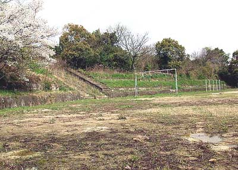

万田青年訓練所グラウンド
熊本県荒尾市原万田42-34 （2003年4月1日撮影）
万田グランド（現・荒尾市立荒尾第五中学校グランド）は、大正15年7月、青年訓練所令により、 万田青年訓練所が三井鉱山により三井万田尋常小学校に併置造られたもので、義務教育後の万田坑従業員やその子弟を対象に 4年間にわたって社会教育のかたわら、特に軍事教練が施されていった。昭和3年からは連隊区の査閲も行なわれるなど軍事色が 強められた。
（写真集 荒尾より）

現・荒尾第五中学校グランド。桜の横の階段を上ると大山祇神社や万田公園へ至る。
BACK
NEXT